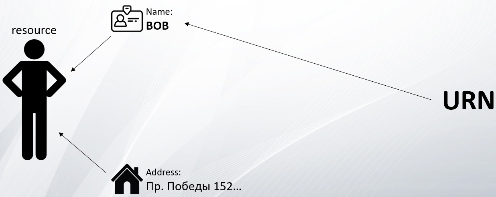
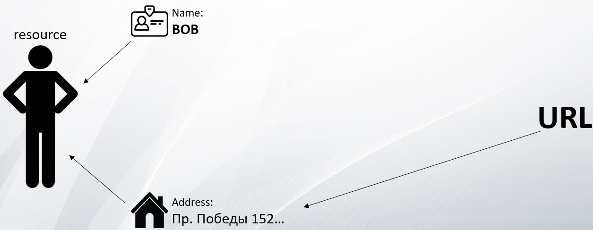
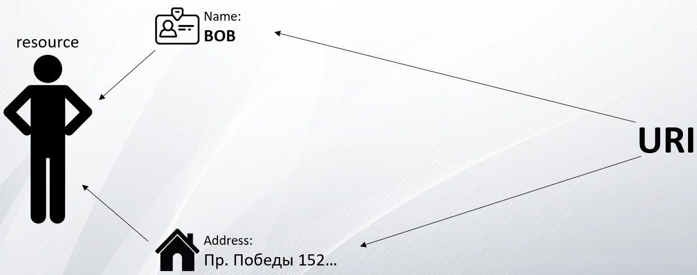

URN (Uniform Resource Name) – это строка символов, которая используется для идентификации какого-либо ресурса, но только по его имени.
URL (Uniform Resource Locator) – это строка символов, которая используется для идентификации какого-либо ресурса, но только по его адресу, по его местоположению.
URI (Uniform Resource Identifier) – это строка символов, которая используется для идентификации какого-либо ресурса по его адресу или по его имени, либо по тому и тому вместе.
